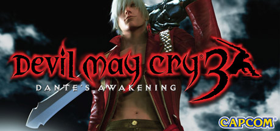

Devil May Cry 3: Dante's Awakening
Devil May Cry 3: Dante's Awakening, conocido en Japón simplemente como Devil May Cry 3 (デビル メイ クライ 3 Debiru Mei Kurai Surī?) es un videojuego hack n' slash de acción y aventura perteneciente a la franquicia de Devil May Cry. El juego fue publicado por Capcom en el año 2005 para PlayStation 2 y luego portado para PC en 2006. Se hizo un remake del juego en el año 2012, que esta disponible en el pack de Devil May Cry: HD Collection para la PlayStation 3 y Xbox 360.
La historia sirve como precuela del primer Devil May Cry, Dante es un joven arrogante y compulsivo, que se ve envuelto en una misión de derrotar a su hermano gemelo Vergil, que planea abrir las puertas del infierno para obtener el poder de su padre Sparda.
Devil May Cry 3 fue criticado por su extrema dificultad, al igual que el videojuego original. El juego tuvo una edición especial titulada Devil May Cry 3: Special Edition, en el año 2006; en esta versión el jugador podía desbloquear a Vergil como un personaje jugable, También se agregan nuevos niveles de dificultad. En 2005 en Japón se publicó un manga precuela al videojuego.

Historia
La historia comienza con Dante en su negocio sin nombre, ahí es visitado por un hombre, Arkham, él cual le da una «invitación» por parte de su hermano Vergil, y posteriormente sale de la tienda, Dante lo persigue pero se da cuenta de que una torre enorme estaba emergiendo del subsuelo, en la cual estaba Vergil posado hasta la parte de arriba, Dante lo toma como un reto por parte de su hermano y se aventura a esta torre llamada Temen-ni-gru; cuando apenas comienza su aventura es atacado por Lady, una jovencita con una gran habilidad para cazar demonios, ella es hija de Arkham, y busca asesinarlo, pues él hizo lo mismo con su madre. Arkham está ayudando a Vergil en su plan, el cual es obtener el amuleto de su madre, el cual tiene Dante, la finalidad es usar la mitad del amuleto de su hermano con el suyo para si conectar el mundo demoníaco con el humano, pero para ello deberá usar la llave (su espada Yamato) y los amuletos de su madre.
Dante es ayudado por un arlequín llamado Jester, él lo guia hasta la cima de la torre, ahí se enfrentan los hermanos, siendo Vergil el vencedor, tras haber vencido a Dante toma su amuleto y crea la llave, pero debe ir hasta la parte inferior de la torre para usarlos, pues ahí esta la puerta del infierno. Dante rápidamente se levanta y lo sigue hasta la puerta, cuando llega vuelve a enfrentarse con Vergil, pero son interrumpidos por Lady y Jester, este último se revela como Arkham y traiciona a Vergil para hacerse con las llaves.
Arkham se hace con el poder de Sparda, pero más tarde es atrapado por Dante, ambos se enfrentan, pero el poder de Arkham es mucho mayor, ahí es cuando Vergil le ofrece su ayuda a Dante para derrotar a Arkham, cuando logran su cometido, desencadenan una tercer pelea, pues Dante ahora es consiente de lo que puede pasar con la relación de él y su hermano, mientras que Vergil quiere controlar el poder de su padre, al final Dante vence a Vergil y este queda atrapado en el mundo demoniáco.
Dante se siente culpable de la aparente muerte de su hermano, y comienza a llorar, cuando sale de la fortaleza se topa con Lady quien le pregunta por que llora, a lo que Dante responde «Los demonios nunca lloran», pero ella le insinúa que si un demonio con corazón humano pierde a un ser querido podría llorar. Más tarde ellos se vuelven amigos y Dante nombra a su negocio «Devil May Cry» en honor a su hermano Vergil. Poco después se revela que el hermano gemelo de Dante sobrevivió a la pelea, y está enfrentándose al rey demonio Mundus.
Desarrollo
Tras la acogida que tuvo Devil May Cry 2. Capcom decidió hacer esta entrega un poco más similar al primer juego, pues fue muy bien acogido por la crítica especializada. Varios elementos, como el motor, las batallas y el tamaño de los escenarios, fueron examinados varias veces por los desarrolladores para evitar que sufriera el mismo destino que su antecesora; otros aspectos como la falta de carisma de Dante en el juego pasado y la poca dificultad que tenía fueron eliminados para que le diera a los admiradores de la franquicia, una experiencia más similar al original.
En el pre-lanzamiento el productor del juego Tsuyoshi Tanaka, dijo en una entrevista: «Queríamos que el jugador tuviera varias maneras de combatir, dimos nuevas y elegantes armas al combate». Debido a que en el mercado japonés fue muy aceptado la reducción de dificultad de Devil May Cry 2, se mantuvo así la versión japonesa del juego, mientras que la americana y europea siguió el plan original de volverlo a sus raíces.
Estilos
El elemento más revolucionario que se ha incluido es la posibilidad de elegir que estilo de lucha adoptará Dante de cuatro disponibles inicialmente Trickster, Swordmaster, Gunslinger y Royal Guard que son ampliables. Y 2 más en la segunda mitad del juego: Quicksilver y Doppelganger. Esto se añadió buscando que el juego estuviese equilibrado para ser jugado por todos los públicos y nadie se sintiese discriminado. Hay 2 estilos ofensivos y 2 defensivos. Swordmaster y Gunslinger son los ofensivos, y Trickster y Royal Guard los defensivos. Swordmaster ofrece nuevos movimientos para las armas de combate cuerpo a cuerpo, incluidos movimientos para atacar a distancia. Gunslinger proporciona movimientos nuevos para disparar las armas de fuego, ofreciéndoles nuevos usos, incluyendo dar estocadas con Coyote-A, ofrece la posibilidad de usar técnicas de combate cuerpo a cuerpo con las armas de fuego; es el recomendado para los iniciados. Trickster es el estilo defensivo más fácil, en tercer nivel aparte de evadir muy fácilmente los ataques permite movimientos para llevar la iniciativa. Por último, Royal Guard es el estilo más difícil de manejar, pero si se sabe usar es el más potente; consiste no en evitar los ataques enemigos, si no en bloquearlos y llevar a cabo poderosísimos contraataques si se usa bien. Los estilos desbloqueables, que se obtienen al eliminar a 2 jefes finales, permitirán a Dante paralizar el tiempo por unos segundos (Quicksilver), siendo este el estilo más táctico, te permite evadirte, coger mejores posiciones, acuchillas al enemigo, etc, es el más polivalente; y crear dotar de vida a tu propia sombra(que es invulnerable) haciendo que ataque igual que tú y siga tus movimientos, duplicando así el daño, entre otras cosas (Doppelganger). Ambos estilos consumen poder demoníaco al ser utilizados, Doppelganger puede ser usado por otro control al presionar el botón "Start".